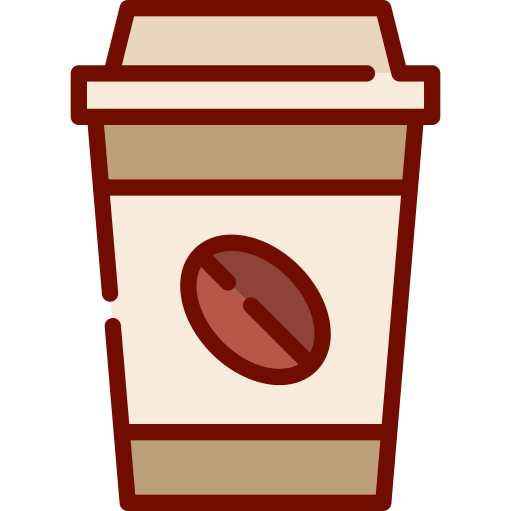

To build community by nurturing the bodies and minds of those without access to food.
Our very dedicated group is working around the clock to build a community and to ensure that the resources you need are available.
Hello to all interested parties in supporting Class '28 Coffee Club. We are opening two main channels for donations, the CashApp and in-person donations.
For food or physical donations for the club, reach out to Andrea @amontejo@sfo.yearup.org or Pete @psrivarom@sfo.yearup.org. They will outline where to put the donations for Coffee Club processing.
For online donations please use our CashApp listed below by clicking on 'Click' or scanning the QR code(only accessible from computer). For any cash donations please reach out to Oscar @omelendez@sfo.yearup.org. He will outline who to give the money to and what it will be used for. In addition, we now have a club Venmo to support and donate to. Using the same steps as the CashApp, fill free to use the QR code if on a computer or device with larger viewing port or clicking Click to send you over to our Venmo. Lastly, for those who find it easier to do it manually, our username for Venmo is: Coffee-Club-28.
Below describes the volunteer committee that will be supporting operations we have in coffee club. They will be working directly with Andrea and Pete from LCA. If you have any further questions or concerns regarding volunteering, reach out to Andrea @amontejo@sfo.yearup.org or Pete @psrivarom@sfo.yearup.org.
To sign up for a certain committee or multiple please click on the 'Volunteer Form' below.

I am passionate about being of service and providing for those in need. Through this project, I hope to make an impact on my fellow students and inspire them to do the same.- President | Alyssa Rosairo

“Overcoming poverty is not a gesture of charity. It is an act of justice. It is the protection of a fundamental human right, the right to dignity and a decent life.”- Nelson Mandela, former President of South Africa | Vice-President | Hezekiah Bates
“However difficult life may seem, there is always something you can do and succeed at."- Stephen Hawking | Marketing Officer |Milo
I'm a firm believer that nobody should come to work worried about their next meal. I hope to sustain and uplift my Year Up community through Coffee Club's support.- Fundraising Officer | Pete Srivarom

I believe that before you listen to your heart, you must listen to your stomach. I do have a sweet tooth though, so if you have any recommendations let me know.- Volunteer Coordinator | Andrea Montejo
I like pulling together teams of people for a relevant cause and hyping people up in order to make a change. An old friend once told me, “Turn your pain into paint, just don't waste your paint." - Joseph- Founder | Dave Martin